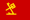

HungaryBrazil
HungaryBrazil
Soviet Union ChileBrazilHungary · Retrospective selection
ChileBrazilHungary · Retrospective selectionThe champions
hold on.
Chile hosted the 1962 World Cup after the devastating earthquake of 1960. Brazil arrived as champion and retained the title despite losing Pelé to injury early in the competition. The hosts also reached the semi-finals and finished third.
Chile's rebuilding gave the tournament a strong local meaning, while some matches were fiercely physical. The host team's 2–0 win over Italy became known as the Battle of Santiago. Its progress gave home crowds a reason to stay deeply involved after that notorious group game.
Pelé's injury against Czechoslovakia forced Brazil to adjust. Amarildo stepped in, and Garrincha became the decisive attacking figure. Chile defeated the Soviet Union in the quarter-finals, while Brazil moved past England with Garrincha scoring twice.
Garrincha struck twice more against Chile in the semi-final. Czechoslovakia, led by Josef Masopust, came through the other half of the draw and Masopust put his side ahead in the Santiago final. Brazil answered almost immediately through Amarildo.
Zito and Vavá completed a 3–1 Brazilian victory. Brazil became only the second team to retain the World Cup, while Chile beat Yugoslavia to secure third place before its home supporters.